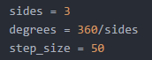
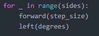
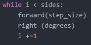
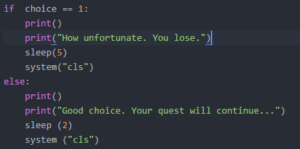
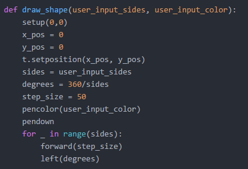

Fun Fact: I am the only one in my entire family with curly hair!
Reflection
I was able to make my website more accesible to the hearing impaired specifically because I chose a video where sound was not
needed to fully enjoy the content. I saw people using moving pictures on their websites which I found really cool. They did this by
copying the link to a gif and inserting it in the same way that you would insert an image. I am most proud of learning how to insert
videos into a website and figuring out how to center it on the page.
Another Reflection: Core4
Variables
A variable is a character or a string of characters that represents something else. Coders like the keep their code consistent and they
don't really like to use numbers within their code. So, they use a variable to represent a number, and everytime they want to use that
number in their code, they type the variable instead, which is defined earlier in the function.

Loops
A loop has the ability to repeat an action in code without having to type the code a bunch of times. There are two types of loops: a
while loop and a for loop. A while loop is used when the end result of the code is known but it is uknown how many times the action
must be repeated in order to achieve the end result. A for loop is used when the end result of the action is unknown but it is known how
many times the action will be repeated.


Conditionals
A conditional specifies an outcome that is dependent upon a certain action. They often contain the words "if" and "else". In a simple
conditional, there are often two outcomes but one condition. If that one condition is met, then one of the outcomes will occur, but
if that condition is not met, then the other outcome will occur.

Functions
Functions are used to make codes shorter and cleaner. A function can be created to do a certain action, like multiplying a number by
4. However, the number that is being multiplied by 4 can be changed by the user. Once the function is defined, the function must be
called, or typed into the code, and then a global variable must be defined. That global variable is then put in as the local variable
in the function and the function runs. The user does not need to see the code of the function, they just need to see that it works
when they define their own variables.

Obamicon Reflection
In class we learned about lists in python, which is essential a bunch of different characters stored in one place under one name.
You can assign a name to a list and then put each item of the list in brackets. The purpose of a list is to store information in one
data type and group similar items together so as to make the code more condensed and clean. Each list has a position, which is called
an index. Each index is assigned a number starting at 0, so in order to use only one item in the list, you have to tell the code which
index you want to take from. A tuple is a list that can not be changed in the code. It is denoted with parenthesis rather than brackets,
and it is useful when companies have private codes that they do not want people to mess with. I used lists today in order to denote
colors, and then changed the colors of every pixel in an image to make it red, white, and blue.
Partnering up with the person sitting next to me worked best when extracting all multiples of five as well as prime numbers from a list
of random numbers and adding them using code. We worked really well together because we both had previous coding experience that
helped us solve the problem quickly and easily. Additionally, we were both able to apply the concepts that we learned in class to the
current project really easily so we were able to figure out problems that we did not have prior exposure to.
Robotics Week Reflection
I learned a lot of new things this past week that was dedicated to robotics. I have had prior experience with building Arduinos and using
programming using Arduino C to light an LED and print a message on a screen, however, this week with Girls Who Code, I learned how to do
many more things. I learned about all of the different additions and sensors that are available on an Arduino, including whisker wires, infrared
dectectors, piezo buzzers, servos, and phototransistors. Using these things, along with Arduino C, my group and I created a robot that
could dance and flash an LED light in sync with the Mario theme song playing from the piezo buzzer. I also used an Adafruit Playground
to light multiple LED lights using the light and temperature sensors on the board. Since we got to keep the board and wires, I am excited
to use it more on my own and create new projects!
Gibson Dunn Reflection
The trip to Gibson Dunn was so amazing and fun! The building was so nice and we were placed in a beautiful conference room equipped with
Gibson Dunn notebooks, pens, breakfast, and a view of New York City. The first speaker was a lawyer who defended Apple in the Apple v.
FBI case and he spoke about the circumstances surrounding the case as well as why the case was so important. The next speaker was a former
CIA worker who spoke about cyber security. It was so interesting to listen to because cybersecurity is not a topic that I hear about a lot
but it is definitely something that is important to talk about. Next, a former Apple employee and a current Pentagon worker spoke about the
Hack the Pentagon project, which is something that I have never even heard of. It was really cool to hear about how he got to work at
the Pentagon and his previous work at Apple. He even offered to give us a tour of the Pentagon if we were ever in Washington, D.C. After
lunch, two speakers spoke about involving more women in the computer science field, which was really interesting and impactful. One of
those two speakers is currently in the process of creating a school for computer science specifically and he asked us to help him
garner more female students. He really cared about our input and I really appreciated that. Finally were two lawyers who worked on the
case against Prop 8 that legalized gay marriage in California and helped out at JFK during the travel ban. Their stories were so inspiring
and I loved listening to them talk.
JavaScript Reflection
Mouse Over Me
Django Reflection
Despite the opinions of the majority of my classmates, I very much enjoyed my experience working with Django in order to make a blogging
website. A big reason why I liked it is because we followed a step-by-step tutorial very carefully and since I am very detailed oriented,
it is very easy for me to follow how-to instructions. Using Django involved a lot of work in Anaconda Prompt, or terminal, and it was
really cool and fun to use. I am now more comfortable with typing commands in the command line to make new directories and update files.
It was so rewarding to see my final product knowing that I built it from scratch.